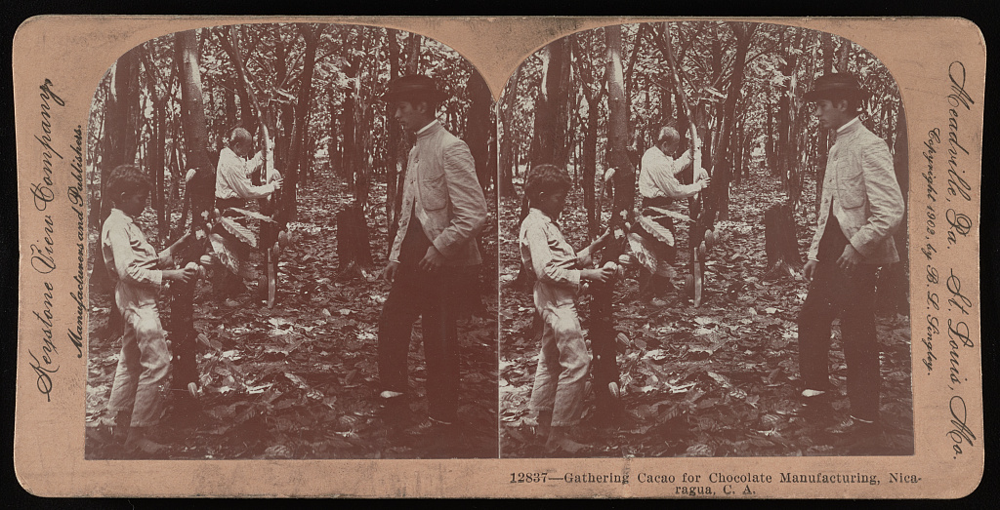

What is APA?
The American Psychological Association (APA) is a professional organization that supports the study and practice of psychology and the behavioral and social sciences. APA also refers to the style guide it publishes, which provides rules for formatting and citing sources in academic writing, especially in the social sciences, education, nursing, and business. APA claims to be the most used style guide in the world. Some classes at West Essex High School require APA format in academic work; many college courses mandate it.
APA format helps you organize your writing so it looks clean and professional. More broadly, it reflects the values of scholarly communication: presenting ideas with clarity, precision, and inclusivity, documenting sources with accuracy and integrity, and using language that affirms the worth and dignity of the people being described. The seventh edition places particular emphasis on bias-free language, since how we write shapes how we think.
The APA Publication Manual is currently in its seventh edition, published in 2020. This edition includes updated guidelines on grammar, punctuation, bias-free language, and detailed instructions for citing various sources. While you can always consult the manual directly, this site aims to give you what I'd consider essential knowledge about the format.
Why do we cite?
Citations perform a number of noble functions that we can break down with the help of three As: accountability, accreditation, and affirmation.
Accountability
Proper citation allows any reader to trace your evidence to its roots, proving the information came from credible references and supporting your original arguments. Citations ease the burden of fact-checking original research and vetting secondhand knowledge.
Accreditation
Acknowledging one's intellectual influences and reference points isn't merely polite—it also prevents ethical issues! Properly documenting sources ensures credit is given to original authors, preventing plagiarism and maintaining academic integrity. (Remember: you signed an agreement!)
Affirmation
Ample citations reflect time and effort invested in thorough research. They stand as evidence of your own expertise.
NoodleTools
NoodleTools is web-based software that assists users with every step of the research process on any device in any location. It helps with organizing and analyzing sources; taking notes and producing outlines; and creating in-text citations and reference lists. More specifically:
- It aids in the generation of accurate MLA, APA, and Chicago-style citations. It can export these citations in a variety of formats, including both Google Docs and Microsoft Word.
- It supports notetaking, outlining, project planning, and archiving source materials.
- It offers collaborative features. Students can work together on projects and teachers can offer guidance along the way.
I strongly encourage you to use NoodleTools for any academic research task you undertake at West Essex High School.
That said, NoodleTools is a tool, not an infallible research assistant. Be sure to double- and triple-check your work, as the materials NoodleTools produces are only as reliable as the data you feed it.
External Sources
For Further Reference
- The APA Style WebsiteThe official APA style guide website.
- California State University, Dominguez HillsA very concise overview of APA basics. Most useful as a refresher.
- Purdue University's Online Writing Lab (OWL)A longstanding resource providing a comprehensive overview of the writing process and APA style, specifically.
Just for Fun
- APA Style HelpFAQs and other clarification straight from the horse's mouth.
- APA Psych OutGauge your APA savvy! It's (probably) really fun!
Useful Tools
- North Carolina State University Libraries' Citation BuilderA step-by-step interactive citation generator.
- Zotero's Z-BibA free citation generator from the makers of Zotero, an open-source reference management tool.
Looking for MLA?
Need MLA instead?
This guide's sibling, Citation Station, covers Modern Language Association (MLA) format with the same structure and tools.
The Essentials
Formatting Conventions
Generally, in APA format, you...
...use a simple header!
Include a page number flush right in the header of every page, beginning with page 1. Student papers do not require a running head (e.g., Surname #).
...use a consistent, legible font throughout!
APA recommends several options, including 12-point Times New Roman, 11-point Georgia, 11-point Calibri, or 11-point Arial.
...follow the usual spacing and margin conventions!
Use 8.5" x 11" white paper with one-inch margins on all sides. Double-space text throughout, including the title page and reference list.
...typically follow the usual alignment and spacing conventions!
Align paragraphs of text to the left margin (not fully justified). Start each paragraph with a half-inch indentation (one tab) from the left margin.
There are exceptions, of course! These include:
- Your title page: Center everything on your title page but the page number.
- Any section labels: Center section labels (like “Abstract” and “References”).
- The abstract (if you're including one): Left-align (do not indent!) the first line of the abstract.
- Any block quotations: If you use a block quote, indent the whole thing a half inch (.5") from the left margin.
- Paper headings: Center Level 1 headings. Left-align Level 2 and 3 headings. Indent Level 4 and 5 headings as though they were paragraphs.
- Any tables or figures: Left-align table and figure numbers, titles, and notes.
- The reference list: Automatically apply a hanging indent of 0.5 in. to reference entries using the paragraph-formatting function of your word-processor.
- Any appendices: Center appendix labels and titles.
...attribute with in-text, Author-Date citations!
Use parenthetical citations to acknowledge sources within the text, following the author-date format (e.g., Surname, 2023). Include a reference list at the end of your paper on a separate page.
Heading Levels
APA relies on up to five different heading levels. Most papers only use three; student papers use as few as one or two.
| Level | Format |
|---|---|
| 1 | Centered, Bold, Title Case Text begins below as a new paragraph. |
| 2 | Aligned Left, Bold, Title Case Heading Text begins below as a new paragraph. |
| 3 | Aligned Left, Bold Italic, Title Case Heading Text begins below as a new paragraph. |
| 4 | Indented, Bold, Title Case Heading, Ending With a Period. Text begins after the heading and proceeds as a regular paragraph. |
| 5 | Indented, Bold Italic, Title Case Heading, Ending With a Period. Text begins after the heading and proceeds as a regular paragraph. |
Reminder!
To render text in Title Case, capitalize the first and last words and all nouns, verbs, adjectives, adverbs, and pronouns. Keep short words (like articles (a, an, the), short prepositions (in, on, of), and conjunctions (but, and, or) in lowercase unless they are the first or last word.
Paper Organization
APA relies on a specific page order so readers can easily locate information. Arrange your pages thusly:
- Title
- Abstract (if you're including one; student papers often don't)
- Text
- References
- Appendices
If your paper contains footnotes and/or tables and figures, you must decide where to place them.
For footnotes:
Use your word processor's footnote feature to place footnotes at the bottom of the page on which they appear. Alternatively, use it to place them on a separate page after the references (which technically makes them endnotes.)
For tables and figures:
I'd recommend embedding tables and figures directly in the text after they're mentioned. Alternatively, you can place them on separate pages after your references. If you opt to place them at the end of your paper, make sure to group the tables together before adding the figures.
Title Page
Title Page Format
Every APA paper contains a title page. All title page elements are double-spaced and centered; the title itself is bolded.
A student title page starts with:
- A paper title. Start three or four lines down from the top of your paper. Render the title in bolded Title Case.
Add a line break after the title. Then, continue with:
- the author name or names. Separate two authors with the conjunction "and"; separate three or more with commas, then use the conjunction "and" between the last two names.
- the course name/number
- the instructor(s) name
- the assignment due date (written out Month Date, Year)
- the page number 1 in the top right corner
Sample Title Page
Citation Basics
Basic Citation Styles
APA uses the author–date citation system to provide credit. Identify each work cited in the text with relevant author names and its publication date. (No date? Use the abbreviation "n.d." instead!) For each in-text citation, place a corresponding reference entry in the reference list. APA employs two basic citation styles: parenthetical and narrative.
Parenthetical citations can appear within or at the end of a sentence. They contain the author's name and the date separated by a comma.
In a narrative citation, the author's surname appears in running text and the date follows in parentheses immediately afterward. You can place the author's name in any logical position in the sentence.
Mind your conjunctions!
Join two authors' names with an ampersand (&) inside parentheses, but with the word "and" in running text. The table below models both.
| Author type | Parenthetical citation | Narrative citation |
|---|---|---|
| One author | (Allaby, 2010) | Allaby (2010) |
| Two authors | (de Orellana & Moszka, 2011) | de Orellana and Moszka (2011) |
| Three or more authors | (Hurst et al., 2002) | Hurst et al. (2002) |
| Group author with abbreviation | (Center for Algorithms and Interactive Scientific Software [CAISS], 2020) | Center for Algorithms and Interactive Scientific Software (CAISS, 2020) |
| Group author without abbreviation | (Rutgers University, 2020) | Rutgers University (2020) |
No author? Use a shortened version of the title instead.
Paraphrase vs. Quotation
APA generally prefers paraphrase to direct quotation. Paraphrase empowers you to develop your writing voice and contextualize external information.
Paraphrase
You can paraphrase both parenthetically and narratively!
Parenthetical: Consequently, to consume chocolate in the pre-Columbian era was to engage in a high-stakes communion with both the economy and the divine (Edgar, 2010).
Narrative: Edgar (2010) makes a case for pre-Columbian chocolate consumption as a ceremony with both theological and economical significance.
Short Quotation
Incorporate quotes of fewer than forty words into a sentence. Again, you can render a quote parenthetically or narratively.
- Place the entire quotation in double quotation marks.
- Include the author, year, and page number (or paragraph number or section name if the work does not have page numbers) of the quotation in the same sentence as the quotation.
Parenthetical: Milton Hershey's democratization of milk chocolate, a commodity he regarded as "a love letter written in sugar," likewise carried religio-economic implications (Presilla, 2009, p. 17).
Narrative: As Presilla (2009, p. 17) recounts, the development of milk chocolate, which Milton Hershey called "a love letter written in sugar," fomented deep and lasting religious and economic impacts.
Long/Block Quotation
Render quotations of forty words or more as freestanding text blocks.
- Indent the entire quotation a half-inch (.5") from the left margin.
- Do not use quotation marks.
- Do not add a period or other end punctuation after the closing parenthesis.
For a parenthetical citation, include the author, year, and page number in parentheses after the final punctuation mark of the quotation.
As epigraphic analysis confirms,
vessels dating from the Classic (AD 250–900) period and documents written at the time of the Spanish Conquest, liquid chocolate was frothed to produce a foam — considered by the Maya and the Aztecs to be the most desirable part of the drink—by pouring the liquid from one vessel into another. In the earlier Preclassic spouted jars (Fig. 1), frothing would also have been accomplished by introducing air through the spout, enabling the vessel to be used for preparing, as well as pouring, liquid chocolate. (Hurst et al., 2002, p. 289)
For a narrative citation, include the author in your text followed by the year in parentheses. Add a parenthetical page number after the final punctuation mark of the quotation.
As Hurst et al. (2002) have determined,
vessels dating from the Classic (AD 250–900) period and documents written at the time of the Spanish Conquest, liquid chocolate was frothed to produce a foam — considered by the Maya and the Aztecs to be the most desirable part of the drink—by pouring the liquid from one vessel into another. In the earlier Preclassic spouted jars, frothing would also have been accomplished by introducing air through the spout, enabling the vessel to be used for preparing, as well as pouring, liquid chocolate. (p. 289)
References
Reference Basics
As a rule, any work cited in your paper should correspond with a reference list entry. References allow readers to identify and retrieve cited works.
Reference Elements
References consist of four elements:
| Element | Description |
|---|---|
| Author | The person, persons, and/or group responsible for the work |
| Date | The date the work was published (use "n.d." if you cannot locate a publication date) |
| Title | The title of the work |
| Source | A location where readers can retrieve the work |
Reference Format
Start the reference list on a fresh page following the text. Center “References” in bold on the first line of the page. Then, arrange reference list entries as follows:
- Alphabetize entries by the first listed author's surname. If a work has no author, use the title instead.
- Place multiple works by the same author(s) in chronological order. List works with no date first; follow with works from earliest to most recent.
- If you list references with the same author(s), order, and date, use lowercase letters after the year to differentiate [e.g., (Surname, 2010a; Surname, 2010b)]. Order alphabetically by title.
Maintain double-spacing and use a hanging indent for the reference list.
Capitalization in References
Titles of articles, chapters, books, and web pages take sentence case in a reference. Capitalize only the first word, the first word after a colon or dash, and any proper nouns. Leave the rest lowercase, even when the work itself prints the title in Title Case.
Names of journals, magazines, and newspapers are the exception. Render those in Title Case and italicize them, as in Current Anthropology and Smithsonian Magazine below.
Sentence case governs the work; Title Case governs the publication that carries it.
Reference Templates
Use this table to build common references from scratch.
| Source Type | Format |
|---|---|
| Book | Surname, First Initial. (Year of publication). Title of work: Capital letter also for subtitle. Publisher Name. DOI (if available) |
| Periodical | Surname, First Initial, Surname, First Initial, & Surname, First Initial. (Year). Title of article. Title of Periodical, volume number(issue number), pages. https://doi.org/xx.xxx/yyyy |
| Website | Surname, First Initial. (Year, Month Date). Title of page. Site Name. URL |
| Online News | If the source has an associated print or broadcast publication: Surname, First Initial. (Year, Month Date). Title of article. Title of Publication. URL If the source is web-only (e.g., Vox, BuzzFeed News): Surname, First Initial. (Year, Month Date). Title of article. Name of Site. URL |
| Film | Surname, First Initial. (Director). (Date of publication). Title of motion picture [Film]. Production company. |
| YouTube | Surname, First Initial [Username]. (Date of publication). Title of video [Video]. YouTube. URL If the uploader's real name and username are the same, omit the username. For organizational accounts, use the channel name in place of a personal name. |
| Podcast | Surname, First Initial. (Host). (Date of publication). Title of podcast episode (Episode number) [Audio podcast episode]. In Title of podcast. Production company. URL The host is listed as the primary author. Executive Producer may be substituted if the host is unknown. |
| Visual Art | Surname, First Initial. (Year of release). Title of artwork [medium]. Name of museum, City, State, Country. URL of museum |
| Data Set | Surname, First Initial or Name of Group. (Year). Title of dataset (Version No.) [Data set]. Publisher. DOI or URL |
| Graphic Data | Surname, First Initial or Organization. (date). Title [Medium or explanation of data if no title]. Publisher. URL and retrieval date if no publication date. |
Sample References
| Source Type | Example |
|---|---|
| Book | Presilla, M. E. (2009). The new taste of chocolate, revised: A cultural & natural history of cacao with recipes. Ten Speed Press. |
| Periodical | Aguirre-Dugua, X., Casas, A., Lema, V. S., Moreira, P. A., Clement, C. R., & Parra-Rondinel, F. A. (2023). Mesoamerica in a bowl: The botanical and cultural heritage of Crescentia L. vessels. Current Anthropology, 64(5), 528–549. https://doi.org/10.1086/727484 |
| Website | Mozdy, M. (2016, August 14). Chocolate: Its origins. Natural History Museum of Utah. https://nhmu.utah.edu/articles/chocolate-its-origins |
| Online News | Fiegl, A. (2008, March 1). A brief history of chocolate. Smithsonian Magazine. https://www.smithsonianmag.com/arts-culture/a-brief-history-of-chocolate-21860917/ |
| Film | Hallström, L. (Director). (2000). Chocolat [Film]. David Brown Productions. |
| YouTube | TED-Ed. (2017, March 16). The history of chocolate – Deanna Pucciarelli [Video]. YouTube. https://www.youtube.com/watch?v=ibjUpk9Iagk |
| Podcast | Abdelfatah, R., & Arablouei, R. (Hosts). (2025, December 4). The bitter history of chocolate [Audio podcast episode]. In Throughline. NPR. https://www.npr.org/2025/12/04/nx-s1-5631795/the-bitter-history-of-chocolate |
| Visual Art | Keystone View Company. (ca. 1902). Gathering cacao for chocolate manufacturing, Nicaragua, C.A. [Photograph]. Library of Congress, Washington, D.C., United States. https://www.loc.gov/item/89715954 |
| Data Set | Restrepo-Arias, J. F., Salinas-Agudelo, M. I., Hernandez-Pérez, M. I., Marulanda-Tobón, A., & Giraldo-Carvajal, M. C. (2023). RipSetCocoaCNCH12: Labeled dataset for ripeness stage detection, semantic and instance segmentation of cocoa pods [Data set]. Zenodo. https://doi.org/10.5281/zenodo.7968315 |
| Graphic Data | Food and Agriculture Organization of the United Nations. (n.d.). Chocolate stats [Infographic]. Retrieved March 14, 2026, from https://www.fao.org/assets/infographics/FAO-Infographic-chocolate-en.pdf |
Style
Academic Writing Style
APA places particular emphasis on clear, concise communication. It encourages writers to consider their audience as they select words, opting for language peers in a field will understand. Likewise, APA urges researchers to write about other people, such as study participants and past investigators, with professionalism, inclusivity, sensitivity, and respect.
Continuity, Precision, and Conciseness
Continuity. APA relies on a logical, orderly, and smooth flow of ideas. It demonstrates a close union between concepts, words, and themes as it progresses. Skilled writers employ transitions to move between sentences, paragraphs, and ideas. Generally, punctuation signals a transition between ideas. It demonstrates relationships and places contextualizes concepts. You can also use transitional words and phrases to aid the flow of ideas, especially when your subject matter proves complicated or abstract.
The table below offers you specific vocabulary to use when you need a transition that demonstrates particular relationships. Consult it whenever you get struck!
| Relationship | Suggested Terms | When to Use them |
|---|---|---|
| Chronology | Subsequently, concurrently, ultimately, previously | Use to track the evolution of an idea, the steps in a scientific process, or the sequence of historical events. |
| Causality | Consequently, accordingly, hence, thus | Use to show a "cause and effect" relationship between two variables or to prove that one fact necessitates a specific conclusion. |
| Addition | Furthermore, moreover, in addition, similarly | Use when you are layering evidence. These words signal that the next point reinforces or expands upon the previous one. |
| Contrast | Conversely, notwithstanding, nevertheless, however | Use to introduce a counter-argument or to show a significant difference between two theories or datasets. |
| Concession | Granted, admittedly, despite this, although | Use to acknowledge the validity of an opposing view before returning to your own argument—essential for scholarly balance. |
| Synthesis | In the final analysis, essentially, to summarize | Use in the conclusion of a paragraph or essay to pull disparate pieces of evidence together into a unified claim. |
Precision. APA attains precision by cutting away vague language, leaving behind only exact, sharply defined ideas. By choosing specific words over general ones, a writer ensures their argument is clear and difficult to misinterpret. Pursue precision with the tips below!
- Favor direct, declarative sentences. Use words and phrases consistently. Favor short, common words. Don't strive to diversify your vocabulary when the meaning of each term matters.
- Put down the thesaurus! Synonyms have shades of meaning. These subtle difference can undermine your argument.
- Be professional! Avoid colloquialisms (informal, familiar words), contractions (can't, don't, etc.), and jargon (medicine: NPO; finance: EBITDA; law: legalese; business: low‑hanging fruit; technology: FTE).
- Avoid anthropomorphism! Don't attribute human characteristics to non-human objects or entities.
- Eschew illogical comparisons! They tend to arise when you omit key words or mix verb forms.
Conciseness. APA says what needs to be said and nothing more. Avoid wordiness, repetition, and redundancy. If you fall short of a length requirement, perform additional research and expand your argument. Don't resort to filler. Vary sentence and paragraph lengths. Avoid short, choppy writing and longwinded writing alike. Logically divide long, complicated paragraphs into pieces.
Grammar
While all the expected grammatical conventions apply in APA, a few key areas merit address.
Verb Tense
Ensure consistency in verb tenses! Shifts within a sentence or paragraph distract readers and potentially undermine your argument. Use this chart when you aren't sure which tense is best.
| Paper Section | Recommended Tense | Example | The "Why" (Rationale) |
|---|---|---|---|
| Discussing Other Researchers' Work | Past | Williams (2020) addressed | Refers to a completed study. |
| Present perfect | Researchers have studied | Links past work to the present. | |
| Method or Description of procedure | Past | Participants took a survey | Records finished actions. |
| Present perfect | Others have used similar approaches | Describes ongoing methodological trends. | |
| Reporting results (Yours or Others') | Past | Results showed; Scores decreased; Hypotheses were not supported | Reports specific historical findings. |
| Personal reactions | Past | I felt surprised | Describes a temporary past state. |
| Present perfect | I have experienced | Notes a recurring or continuous state. | |
| Present | I believe | States a current conviction. | |
| Discussion of implications | Present | The results indicate; The findings mean that | Expresses enduring truths. |
| Conclusions, limitations, Future directions | Present | We conclude; Limitations are; Future research should explore | Establishes a final, current stance. |
Active Voice
Favor the active voice over the passive to craft clear, concise sentences. Feel free to use the first person to demonstrate your direct involvement.
| Discipline | Passive Voice | Active Voice |
|---|---|---|
| Scientific | The catalyst was added by me to the solution once the temperature reached 100°C. | I added the catalyst to the solution once the temperature reached 100°C. |
| Psychological | A significant shift in the participant's facial expression was noted by me during the third trial. | I noted a significant shift in the participant's facial expression during the third trial. |
| Economic | The impact of the interest rate hike on small business loans was evaluated by me using the quarterly data. | I evaluated the impact of the interest rate hike on small business loans using the quarterly data. |
Tables and Figures
APA divides visuals into two categories: tables and figures. A table contains information arranged in rows and columns; a figure is any other kind of visual (graphs, photos, maps, diagrams, etc.). Tables and figures consist of four elements.
Table or Figure Number
Number each table or figure in the order discussed (e.g., Table 1, Table 2, etc.). Tally tables and figures separately, not cumulatively. Bold and align left.
Table or Figure Title
Provide a brief, clear, explanatory title. Italicize, double-space if necessary, and align left.
Table Body or Figure Image
A table body contains:
- column headings used to identify and organize the data below
- data cells
A figure image may consist of:
- the image itself
- a key or legend that provides information about the image's elements
Table or Figure Notes
Notes explain data in greater detail. They appear below the table or figure in the following order:
- General Notes Used to explain, qualify, or provide information relevant to the table as a whole (e.g., definitions for abbreviations). These begin with the italicized word Note. followed by a period.
- Specific Notes Used for information regarding a particular column, row, or individual cell. Indicated by superscript lowercase letters (e.g., a, b, c) assigned from left to right and top to bottom.
- Probability Notes Used to report statistical significance testing. These specify how asterisks (*) or other symbols attach to p values to indicate where the null hypothesis has been rejected.
Table Format
Table #
Table Title
Table Note.
Sample Table
Table 1
Comparative Exchange Rates of Cacao Beans in Late Post-Classic Mesoamerica
| Commodity | Cacao Bean Cost (Avg) | Whimsy Equivalent (W-Index) |
|---|---|---|
| One Small Tomato | 1 bean | 0.05 |
| One Large Avocado | 3 beans | 0.12 |
| One Solid Armadillo | 100 beans | 4.50 |
| One Night's Stay in a Palace | 40 beans | 1.20 |
| Stylist Consultation | 10 beans | 8.00 |
| Golden Ticket (Speculative) | 1,000,000+ beans | 99.9 |
Note. Data adapted from de Orellana et al. (2011) and extrapolated using the "Wonka-Dahl Standard of Imaginary Economics." The W-Index is a non-linear scale measuring the perceived magic of a transaction.
Figure Format
Figure #
Figure Title
Figure Note.
Sample Figure
Figure 1
Workers Gathering Cacao for Industrial Use

Note. From Gathering cacao for chocolate manufacturing, Nicaragua, C.A. [Photograph], by Keystone View Company, ca. 1902, Library of Congress, Washington, D.C., United States (https://www.loc.gov/item/89715954). In the public domain.
Citation Generator
Choose a source type, fill in the fields you have, and the reference builds itself below. Copy it into your References list, then format it with a hanging indent.
This tool covers the most common sources. For anything unusual, a chapter in an edited book, a film, a dataset, or a source with many authors, consult APA Style's reference examples.